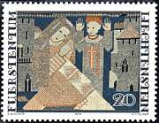
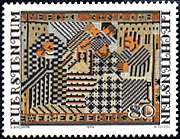
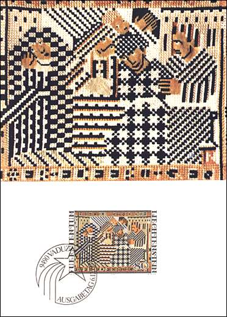
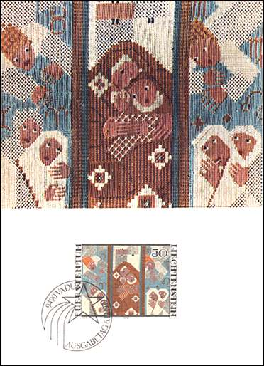
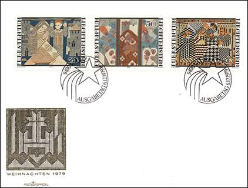
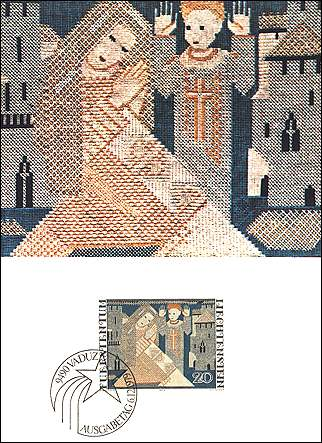

Embroideries on Stamps of Liechtenstein

Embroideries
by Ferdinand Nigg

This nice set of three values was issued by the Liechtenstein postal administration the 6th December 1979 to traditionally commemorate the Christmas by a philatelic issue.
 |
 |
The value of 20 Rappen is named "Annunciation", that of 50 Rappen "Christmas" and the last, of 80 Rappen is named "Blessed are the Peacemakers".
 |
 |
The stamps were designed by Auguste Böcsor from Vienna. The values of 20 and 50 Rp. were engraved by Alfred Fisher, Vienna and that of 80 Rp. by the renown engraver Wolfgang Seidel, also from Vienna, Austria. They were printed in combined autotype / recess by Austrian Government Printing Office in Vienna.